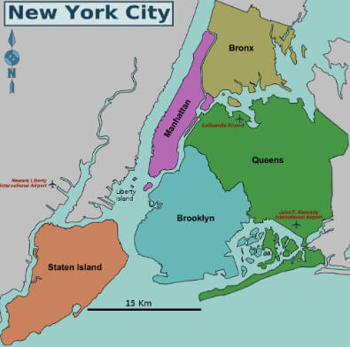

Plan de New York
La ville de New York (New York City) est constituée de cinq arrondissements, Mahattan, Brooklyn, Queens, The Bronxs, Staten Island. Chacun d'entre eux est subdivisé en quartiers qui ont une histoire propre.
